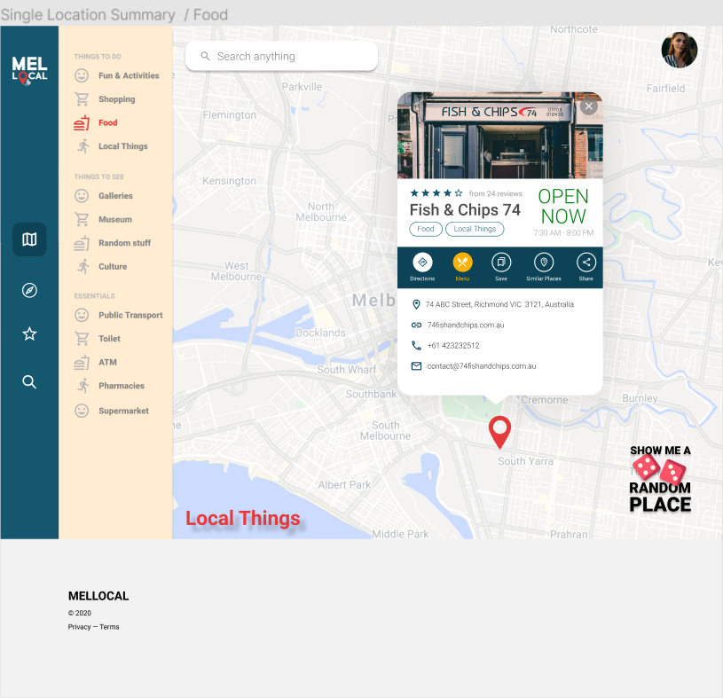
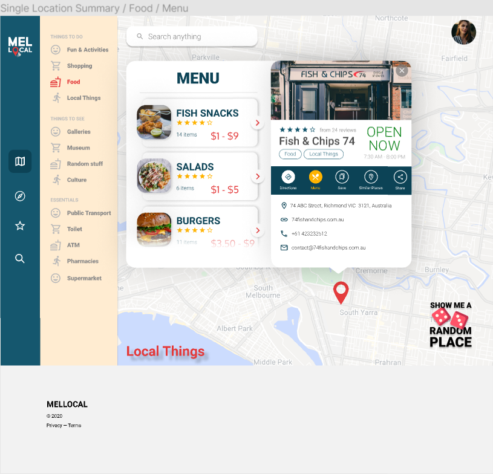
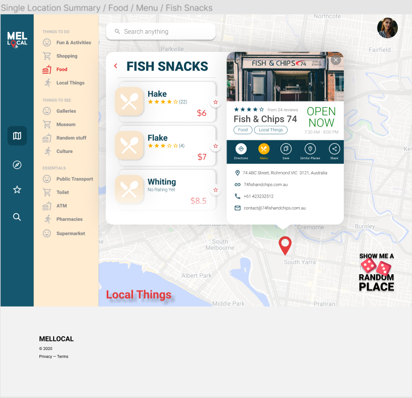
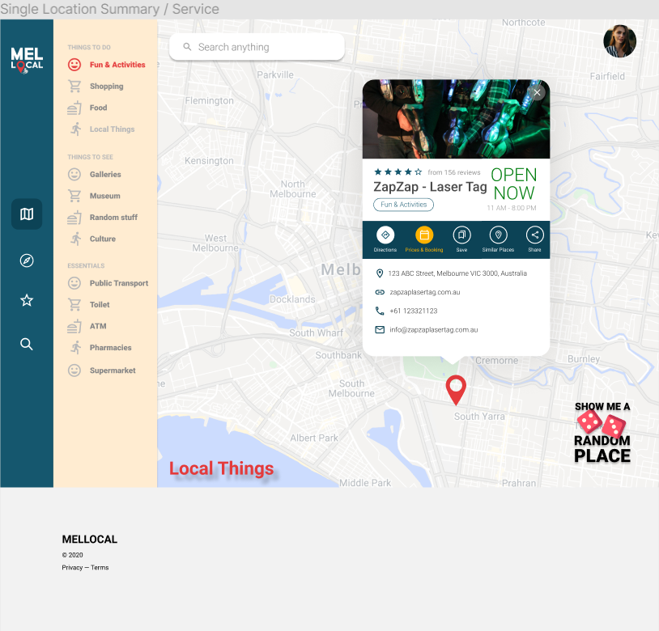
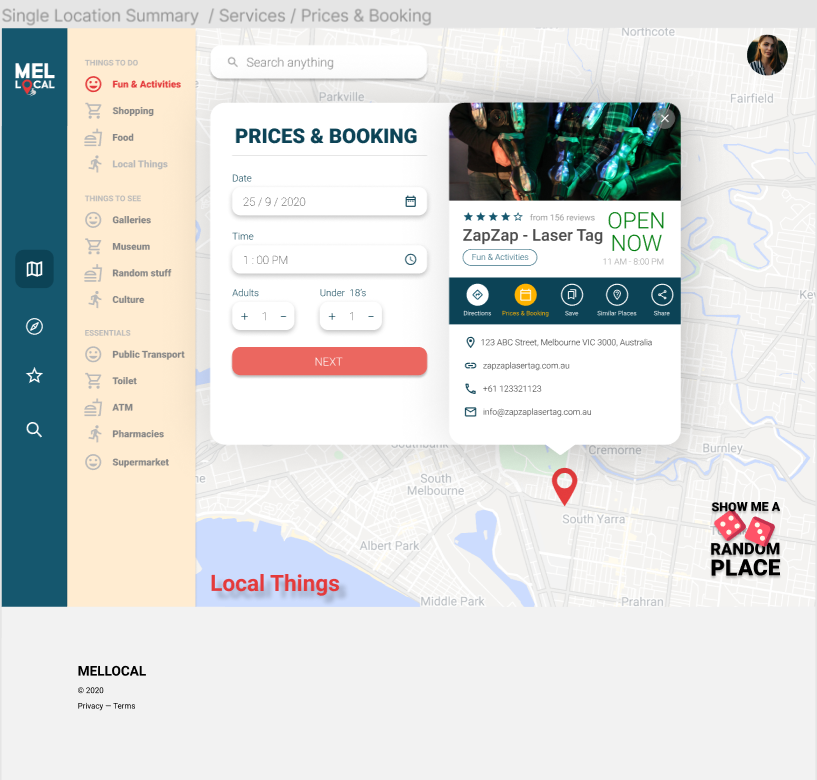
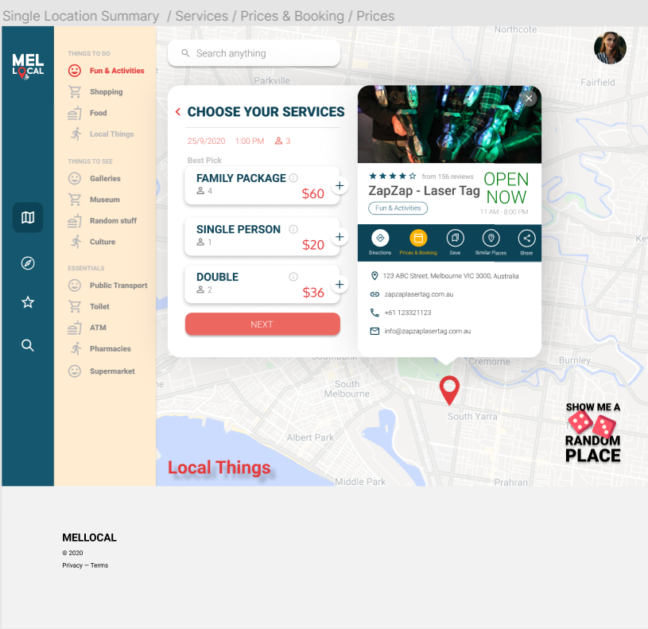

The website will gather the cost of products or services offer at locations from prior researches, user feedbacks or supplied from the business itself, depending on the category of the business. There will be an extra button on the location widget of places such as restaurants, events, activities or cafe that when clicked, the system will display the cost of items in menu or cost of services avaialble at the places. Booking option will also be avaialble if the business register for this feature.
1. Display Information Widget for a single location after customer click on a location

Consistency and Standards:
Widget layout and Menu button is applied for every food & drinks location with cost information
Flexibility and Efficency of Use:
Display other business with the same category by clicking onto the category buttons.
Customer can perform any action relating to that single location by using the shortcut buttons.
User Control and Freedom:
Display Close button, customer can choose to exit this location widget
Visibility of System Satus
Close button and the pointer at the botton of the widget indicate that all the information and buttons inside is
relating to this single location.
2. Display Menu Categories after customer click on Menu Button

Consistency and Standards:
Menu Categories layout is applied for every food location with category in their menu
Flexibility and Efficency of Use:
Customer can choose to see the food under the category that they're interested in instead of scrolling through
a long list of items
Visibility of System Satus
Menu Box displays next to and behind Single Location indicates that this Menu belongs to the location.
Item numbers and Arrow buttons suggesting that this is a category box that will show individual items after clicking
the Arrow buttons.
Blurry white overlay at the bottom of the Menu indicates there are more "Categories" if customer srolls down.
3. Display Menu Items after customer click on a Menu Category

Consistency and Standards:
Menu Item layout is applied for every food location with category in their menu
If there is no photo for the menu item, the food icon is displayed.
Flexibility and Efficency of Use:
Choose to review a specific menu item by clicking the star button
Click Back button to go back to the Menu Categories
See all reviews rating by clicking on the review number
Visibility of System Satus
Back button and the Categories Name suggests all the menu items below is under the category customer clicked.
Blurry white overlay at the bottom of the Menu indicates there are more "Categories" if customer srolls down.
Blurry white overlay at the bottom of the Menu indicates there are more "Categories" if customer srolls down.
1. Display Information Widget for a single location after customer click on a location

Consistency and Standards:
Widget layout and Prices button is applied for every service location
The text "and Booking" will display in the special button for businesses that registered for booking
Flexibility and Efficency of Use:
Display other business with the same category by clicking onto the category buttons.
Customer can perform any action relating to that single location by using the shortcut buttons.
User Control and Freedom:
Display Close button, customer can choose to exit this location widget
Visibility of System Satus
Close button and the pointer at the botton of the widget indicate that all the information and buttons inside is
relating to this single location.
2. Display Booking Form after customer click on Prices and Booking Button

Consistency and Standards:
Booking layout is applied for every food location with category in their menu
Flexibility and Efficency of Use:
Enter the time and date manually or visually choose it in the widget that display after clicking the icons
Enter number of adults and children manually or by clicking the button.
Visibility of System Satus
After clicking Prices and Booking customer will expect to see the price but it is not there but instead the form displayed,
the Next button suggests that the price will display after clicking Next and input of the form will be use for
displaying the prices that is suitable for the customer situation.
3. Display Prices after customer fill the Booking form

Aesthetic and Minimalist Design
Show the option that is most suited for the customer situation on the top so they don't have to scroll.
Display number of people.
Visibility of System Satus
The red color suggest it is clickable because the back button is red. So the date, time and people is also clickable, which
mean it's editable when click.
Add button and Next button indicate this is a booking process.